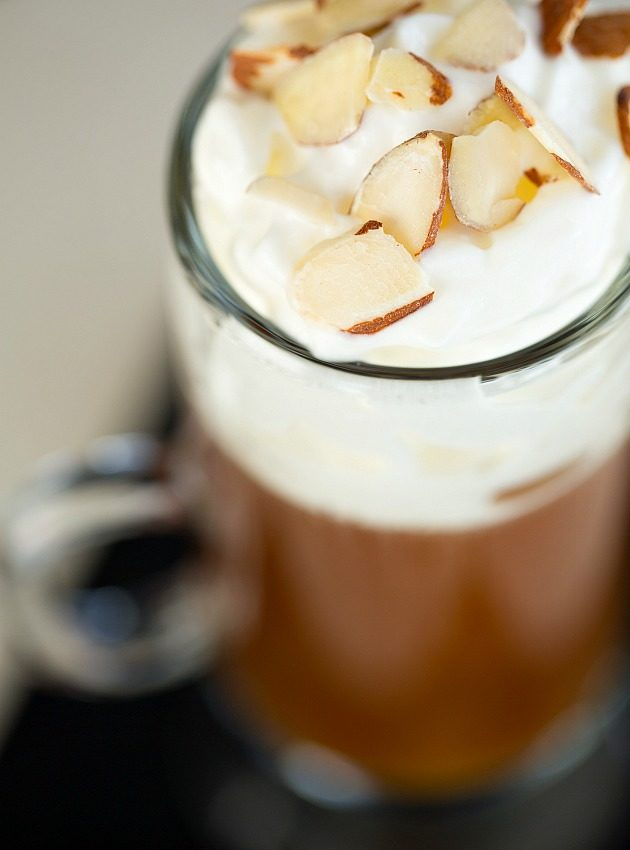

Rather than whiskey, the French prefer Cognac for the alcohol and Amaretto for the flavor. A typical French Connection is equal parts cognac and Amaretto liqueur on ice.
When served with hot coffee however, it often goes by the name of Cafe Amore.
What You'll Need
- Hot coffee
- 1 oz Cognac
- 1 oz Amaretto
- Shaved almonds
- Whipped cream
Add an ounce of Cognac and an ounce of Amaretto to a warmed glass then fill the rest with hot, black coffee.
For the real deal, top with whipped cream and shaved almonds.